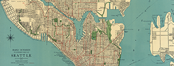

About Me
Beginning
I worked my way through high school as a lifeguard and once pulled a young boy out of the deep end of the pool. He was so excited to go swimming that he forgot that he didn’t know how to swim. But you have to admire that kind of enthusiasm and I think that, at times, genuine creativity demands that you leap before you look.
Both
I’ve always written poetry and short stories, and kept journals. I still have diaries from my teenage years and a stack of journals that I refer to occasionally. Everyone thought I’d grow up to be a writer. But writing came so naturally to me and I thought choosing a career had to be harder than that. I headed to art school. My writing experience turned out to be a huge plus in my major, advertising design, in which writing headlines and inventing product names play as significant a role as color theory, typography, and research. Sometimes the words come first and sometimes the images are the starting point. But both have to work.
Move forward
During an internship, a superior told me, “Look where you’re going, not where you’ve been.” She was helping me handle an X-Acto knife. But I’ve always remembered what she said as solid advice for almost any circumstance. While I have a significant reservoir of experience to draw on, I’m endlessly curious about where design is going next. My desire to keep learning led me to Bloc and their UX/UI and Frontend course. Over the past nine months I’ve studied user testing, coding, and wireframing, and had the benefit of being mentored by some people who clearly are passionate about their mission and their students. I’ve learned so much and remain curious, open-minded, and enthused for creating with the new technologies that have expanded the boundaries of design. As a graphic designer, user experience designer, writer, and entrepreneur, I am so excited to team up with others to inspire, motivate, and empower people and ideas.
The groove
As an art director in a design and publishing firm I learned from a mentor that when you trust people they consistently rise to the occasion. I felt proud and responsible when trust was placed in me. In my own freelance business, I’ve put my trust in clients, co-workers, and vendors and have rarely been disappointed. When I played field hockey there were times when my teammates and I were no longer separate positions with separate roles. We became one mind with one goal. I strive for that feeling in working with others — to get into that groove where we are greater than the sum of our parts.
Let's Work Together
Have a project or opportunity you’d like to discuss?
I’d love to hear all about it.
I live in the sunny city of Seattle where people recycle absolutely everything and do not jaywalk. If you jaywalk, we know you’re not from here.
